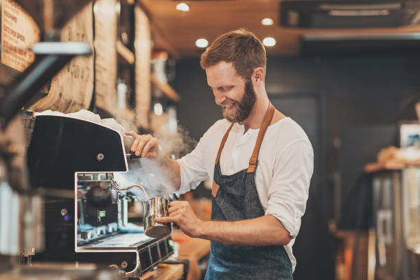

Puestos disponibles
Camarero/a
Buscamos personas apasionadas por el servicio al cliente y el buen café. Como camarero/a en Solume Coffee, serás el rostro de nuestra marca, atendiendo a nuestros clientes con una sonrisa y asegurando una experiencia única en cada visita.
Barista
Amas el café y su preparación perfecta? En Solume Coffee, estamos en la búsqueda de baristas que compartan nuestra pasión por el café de especialidad. Si te encanta crear arte latte y conocer los distintos métodos de extracción, ¡queremos conocerte!
Recepcionista
¿Tienes habilidades para conectar con las personas? En Solume Coffee, valoramos la calidez y la buena energía para recibir a nuestros clientes. Buscamos una persona organizada, amable y con excelentes habilidades de comunicación para ser la primera sonrisa que nuestros visitantes encuentren.

Encargado/a
Si tienes experiencia en gestión de cafeterías y liderazgo de equipos, esta es tu oportunidad. En Solume Coffee, buscamos un/a encargado/a que comparta nuestra visión de calidad y excelencia en el servicio, asegurando el correcto funcionamiento de cada área.
Únete a Nuestro Equipo
En Solume Coffee, buscamos personas apasionadas, con ganas de crecer y de ofrecer experiencias únicas a nuestros clientes. Si amas el café y quieres formar parte de un proyecto en constante evolución, ¡este es tu lugar! Consulta nuestras oportunidades y descubre cómo puedes unirte a nuestra familia.